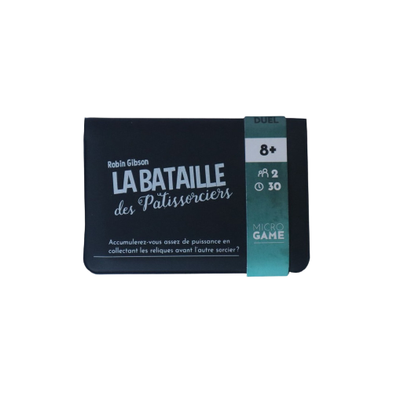
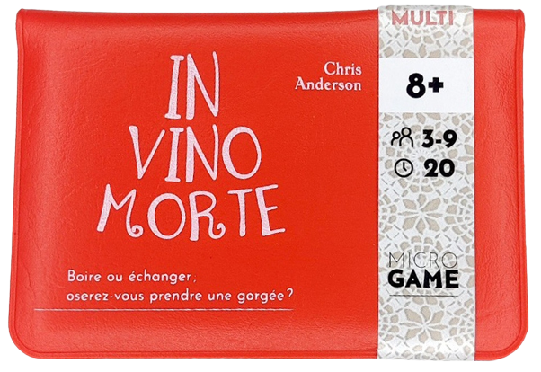

Accueil
La Maison de Papier
Jeux
Ludothèque
L'atelier du Geek
Contact

Il fallait bien que cela arrive... Vous ne pouvez tout simplement plus travailler avec votre collègue de la boulangerie Arcane. Dans un moment de frustration, vous le défiez en duel : après la fermeture, tout est permis. Le perdant devra démissioner et remettre la boulangerie en ordre. La bataille des Patissorciers est un jeu qui se joue à 2 et tient dans un petit porte carte. Il nécessite, toutefois, quelques pions qui peuvent tout aussi bien être remplacé par des cailloux ou autres objets divers si vous jouez à ce jeux en voyage. Ce jeu est très pratique pour sa facilité de transport et sa courte durée de jeu. Âge moyen : 8 ans. Durée de jeu : 30 min

Au premier service, c'est sûr que c'était dans la soupe. Après, c'est un peu flou. Peut-être dans la sauce Béarnaise ? Quoi qu'il en soit, deux choses sont certaines : Quelqu'un empoisonne les convives et le vin qui est servi pourrait être le dernier que vous dégustez. Dans la série des jeux à emporter partout voilà un jeu très amusant qui, à la différence de celui du dessus, ne nécessite rien d'autre que les cartes du jeu et se joue entre 3 et 9 joueurs. Une personne joue le serveur et distribue à chaque joueur ( lui compris ) une carte poison ou une carte vin, puis chacun son tour vous pouvez boire ou échanger notre carte, ceux qui finissent avec le poison sont éliminés jusqu'à ce qu'il ne reste qu'un joueur. Âge moyen : 8 ans. Durée de jeu : 20 min